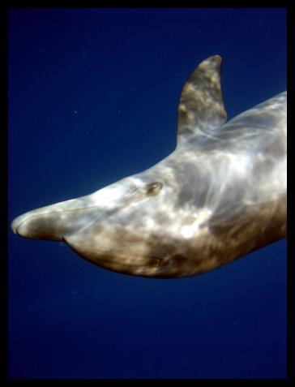
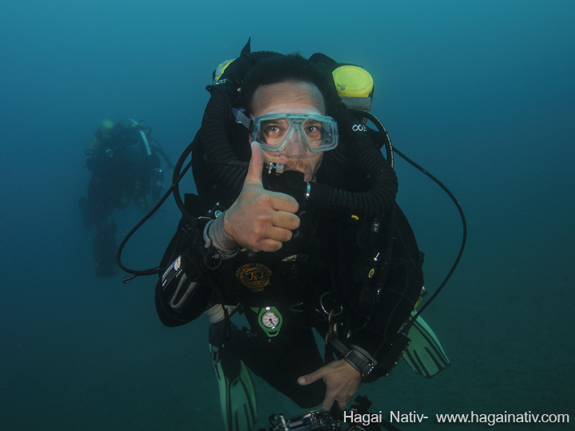
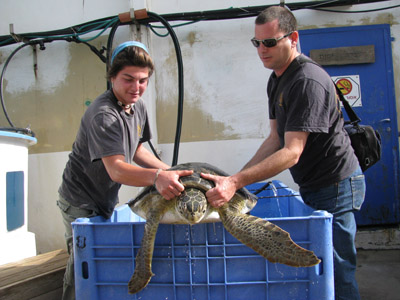
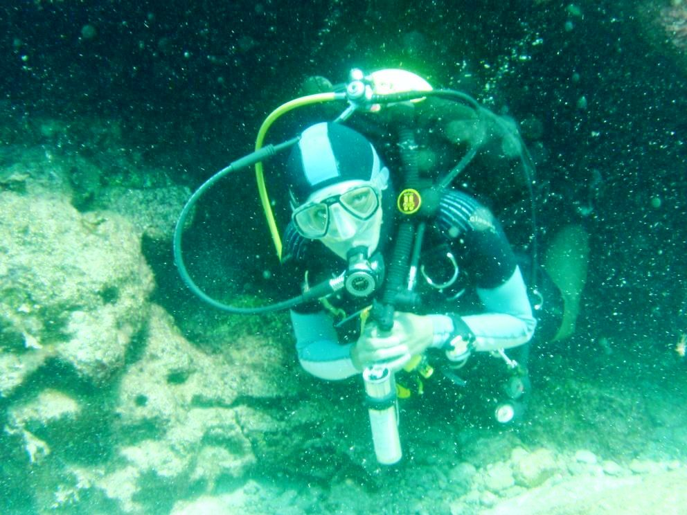

The Deep Med Research Group (Established 2009)
Marine Biology in the Eastern Mediterranean
Head of the DEEPMED: Dr.Dan Tchernov
Lab manager: Dr. Eli Shemesh
Ph.D. candidate

Degrees:
B.Sc. in marine biology and biotechnology from the Ben Gurion University.
Research interests:
Heavy metal uptake as a marine pollution measurement tool.
Paleo-indicators to paleo-currents in the sceletal sturucture, currents and DBL.
Email: yotpope@gmail.com
Post Doctoral scholar
Phylogenetic Analysis of Gelatinous Marine Fauna in the Eastern Mediterranean Basin - An Ecosystem under Anthropogenic Stress
Email gurrony@gmail.com
Ph.D. candidate
The mesophotic reef community in the Gulf of Eilat and its physiological adaptations

Photographed by Hagai Nativ
Shai serves also as head technical CCR diver at the Mediterranean Monitoring program (under the MAARAG)
Stephan Martinez
Ph.D. candidate
Degrees:
M.Sc. Marine Biology, Tel Aviv University
Research interests:
Changes in isotopic composition of marine vertebrates on a spatial scale.

Photographed by Hagai Nativ
Stephan serves also as a technical CCR diver at the Mediterranean Monitoring program (under the MAARAG)

Ph.D. candidate
Degrees:
M.Sc. Marine Biology, Tel Aviv University

Research interests:
Populations, genetics, growth and conservation of sea turtles.
Sea turtle project coordinator, Sea Turtle Rescue Center - Director
ISRAEL National Nature and Parks Authority
IUCN SSC MTSG - Member of the International Union for Conservation of Nature, Species Survival Commission - Marine Turtle Specialist group
Mobile : 972 577 512220
Office : 972 9 8669173
(co-supervised by Gil Rilov)
Mail: yaniv@npa.org.il
The center for turtle rescue website:http://parks.org.il/seaTurtle.php
Ph.D. candidate
Degrees:
M.Sc. Marine Biology, Bar Ilan University
Hints from the past - ancient reefs analyzes lead to present understanding and future projections
Ph.D. candidate

Degrees:
M.Sc. Marine Biology, Tel - Aviv University
Food web modelling in the estern Mediterranean co supervision with Sher D
Ph.D. candidate
Mycosporine like amino acids biochemistry and ecology in marine ecosystems
Ph.D. candidate
.jpg)
Exploration of Mesophotic Sponge Beds In the Levantine Basin – Community composition, Connectivity and changes in trophic relations along a depth gradient.
Ph.D. candidate
Interactions between algae and the chytrid fungus (co supervision with A sukenik)
Ph.D. candidate
Comparative community genomics and evolution in Dead Sea fungus (co-supervised by Aviatar Nevo)
Alumni
Ph.D
Degrees:
B.Sc in Biology (cum Laude), The Hebrew University of Jerusalem.
M.Sc. in the program of Environmental Studies, The Hebrew University of Jerusalem (courses completed cum Laude).
Research interests:
Marine photosynthesis.
The symbbiosis between marine anthozoa and dinoflagellates.
EMAIL: oritnir.eco@gmail.com